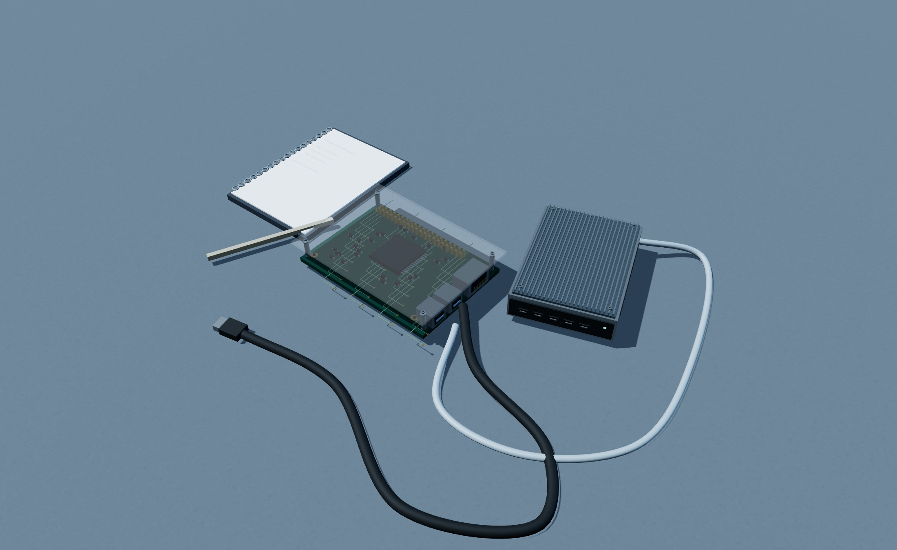
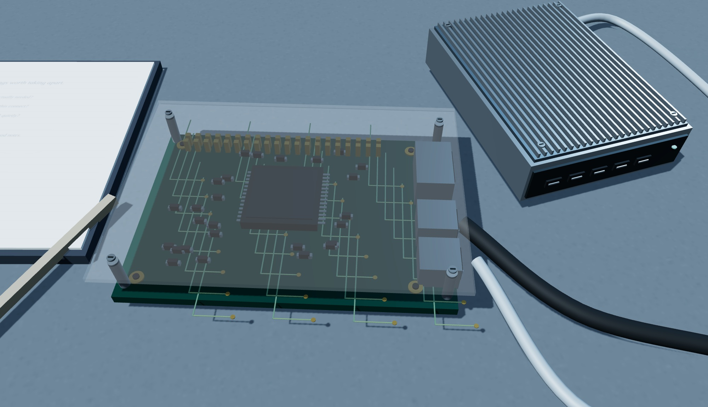
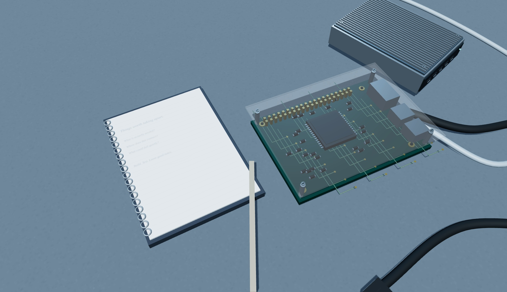

VICTOR
MENDIVIL
Software developer.
ERP experience. Restless curiosity.
The person
behind the work.
I like the moment when a difficult problem starts to make sense.
I’m Victor Mendivil, a software developer and problem solver with experience in Dynamics 365 Finance & Operations and ERP. My work moves between business needs and the technical details that make a solution usable.
I’m interested in the whole journey: understanding requirements, shaping the design, writing the code, testing it, getting it into use, and helping it keep working. That also means talking with the people on either side of the software.
Look closer.
How I approach the work

Understand before building.
Requirements are more than a list of features. I want to understand what someone is trying to do, where the friction is, and what needs to connect to the rest of the business.
From there I work through technical design and implementation. The useful question isn’t only “Can this be built?” It’s “Will this still make sense when someone has to use, test, or support it?”

Stay with the details.
Testing, deployment and support belong in the same conversation as development. I like connecting those stages instead of treating the handoff as the finish line.
Cross-team coordination matters too. A clear explanation, a shared understanding of a constraint, or a well-placed question can move the work forward just as much as another line of code.
Beyond the day jobA little curiosity
goes a long way.
I enjoy the small, hands-on side of technology as much as the large systems.
At home
Raspberry Pi and homelab/server interests keep me close to the physical side of computing: the little machines, connections and choices behind an everyday service.
On my mind
I’m curious about AI-assisted work processes and web applications. I want to explore where these tools help people work more clearly, not just where they can produce more output.
The still-life in this essay is an original digital illustration of that curiosity. It isn’t a photograph of my equipment or a claim about a completed project.
Start a conversation.
A clear problem, a small idea, or a thoughtful career conversation is a good place to begin.
Freelance
I’m employed full-time. I’m interested in contained work for individuals or small businesses that fits remote, evening or asynchronous collaboration.
Career
I’m open to conversations about senior developer and technical-lead roles. My grounding is end-to-end software work and Dynamics 365 F&O / ERP.
Say hello
If the link won’t open, find vmendivilaxdeveloper on LinkedIn. This local preview does not send or store messages.